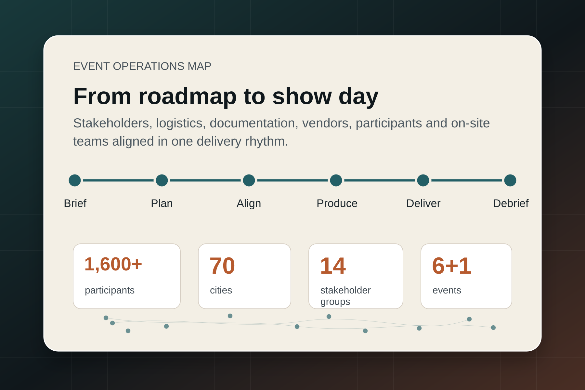
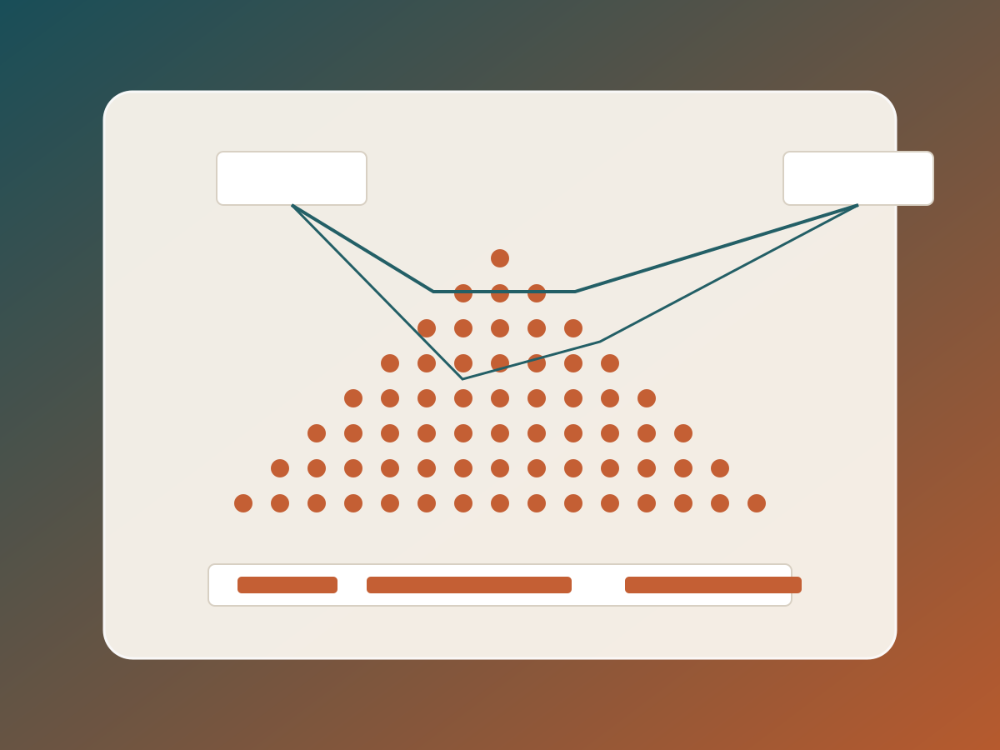
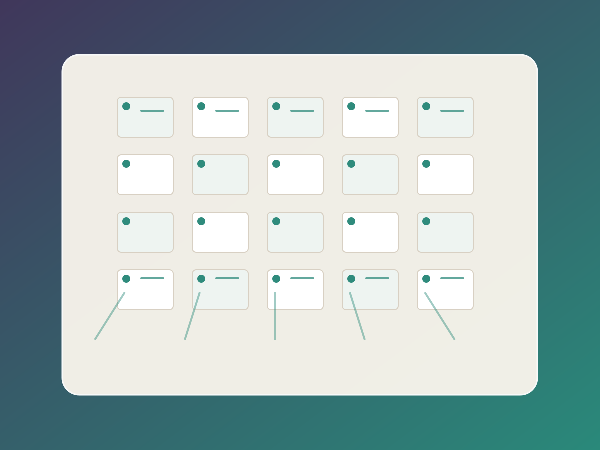
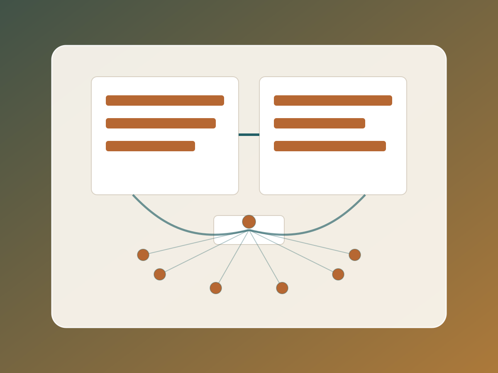

Event & Project Manager
Turning complex events into clear plans and smooth delivery.
I coordinate conferences, corporate initiatives, and stakeholder-heavy projects from first roadmap to show day, keeping logistics, documentation, vendors, participants, and on-site teams aligned.

About
I build structure around moving parts.
My experience sits at the intersection of event production and project coordination: scientific conferences, hybrid formats, participant communication, stakeholder alignment, vendor management, budgeting, documentation, volunteer coordination, and on-site delivery.
I am strongest in environments where many people, deadlines, and details need to move together. I translate ambiguity into roadmaps, keep communication clear, and make sure the final experience feels organized, professional, and calm for guests and stakeholders.
Portfolio
Selected event and project work
Case studies are framed around scope, coordination challenge, my role, and evidence of delivery.

XIII All-Russian Congress on Theoretical and Applied Mechanics
Coordinated preparation for a large-scale congress hosted at Peter the Great St. Petersburg Polytechnic University, acting as a connecting point between university units, the Russian Academy of Sciences, the Government of St. Petersburg, vendors, volunteers, participants, and high-level guests.
- 1,600+ participants from 70 cities and 6 countries
- 18 RAS academicians, 31 corresponding members, and almost 300 young scientists
- Roadmap, documentation, task tracking, logistics, branding, program, catering, technical support, and on-site coordination

Actual Problems of Mechanics Conference Series
Organized recurring scientific conferences across on-site, online, and hybrid formats. The work covered end-to-end planning: event roadmaps, participant communication, website and participant texts, budgeting, room preparation, printed programs, vendor communication, volunteer training, schedules, and delegation.
- 6 conferences organized across changing formats and locations
- Hybrid coordination for local participants and remote international speakers
- Cultural and engagement programming, including excursions, receptions, banquets, and interactive formats

Online and Hybrid Event Transformation
Supported event delivery through pandemic-era format changes, including fully online and mixed-format conferences. The work required flexible planning, participant guidance, technical coordination, and clear communication between remote speakers and on-site teams.
- Fully online conference delivery in 2020
- Hybrid conferences with on-site Russian participants and remote international speakers
- Participant communications, schedules, technical support, and operational documentation
Capabilities
What I can own end to end
Event Planning
Roadmaps, timelines, ownership, venues, schedules, participant journeys, and show-day readiness.
Stakeholder Alignment
Communication with senior stakeholders, university units, partners, vendors, and high-level guests.
Logistics & Vendors
Catering, printing, branding, technical support, venue setup, procurement, and on-site coordination.
Documentation
Roadmaps, task tracking, participant texts, website copy, programs, schedules, briefings, and archives.
Teams & Volunteers
Selection, training, task delegation, shift planning, and clear communication during live delivery.
Hybrid Formats
Coordination between remote speakers, on-site audiences, technical teams, and participant support.
Process
How I keep delivery under control
-
01
Clarify scope
Define goals, audience, stakeholders, constraints, and success criteria.
-
02
Build the roadmap
Turn the event into owners, timelines, dependencies, documents, and checkpoints.
-
03
Align people
Keep stakeholders, vendors, volunteers, speakers, and internal teams moving in the same direction.
-
04
Deliver and adjust
Track risks, solve issues quickly, and keep the guest experience calm and professional.
Contact
Open to event and project management roles.
I am especially interested in corporate events, people and culture initiatives, conference operations, stakeholder-heavy projects, and roles where structured execution matters.
Contact on LinkedIn
Location flexible. Available for remote, hybrid, and on-site event work depending on the project.